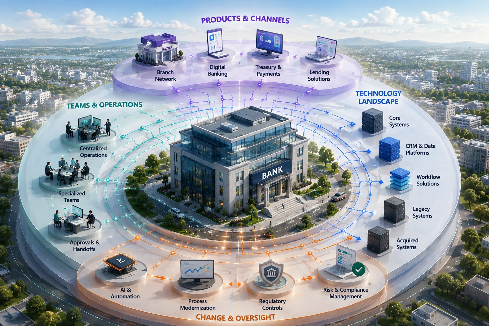

Growth adds more thanvolume.It adds operationalcomplexity.

Growth makes the bank more capable. It also makes execution harder to see end to end.
See whether change actually improves execution.
RE-ViVE gives transformation teams a continuous view of how execution behaves before, during and after change.
See where execution creates friction.
Establish the actual paths, delays, handoffs, rework and exceptions that exist today.
See how execution patterns shift.
Observe whether new technology, automation or operating changes are altering real workflow behavior.
See whether execution actually improved.
Compare the new operating reality against the baseline and keep watching as conditions evolve.
Turn execution into measurable operational outcomes.
RE-ViVE makes the behaviors behind performance visible enough to measure, compare and improve.
Observed execution → measurable behavior
See where activity is performed again and how often it happens.
See where elapsed time accumulates across actual execution.
See where progress depends on people, queues or approvals.
See where execution differs from expected controls or operating patterns.
Turn execution visibility into growth capacity.
For a growing regional bank, Execution Intelligence is not only about finding friction. It helps the organization scale, integrate, create capacity and modernize with greater confidence.
Scale with confidence
Grow products, channels and volume without losing visibility into how work actually executes.
Integrate faster
Understand and assimilate acquired processes, systems and operating practices using execution evidence.
Create more capacity
Reduce waiting, repeated work and unnecessary handoffs before assuming more resources are required.
Modernize with confidence
See whether AI, automation and technology changes are actually improving execution—not simply moving work.
Growth should increase capacity — not hide how the bank operates.
See how RE-ViVE brings execution context to the banking workflows that matter most.